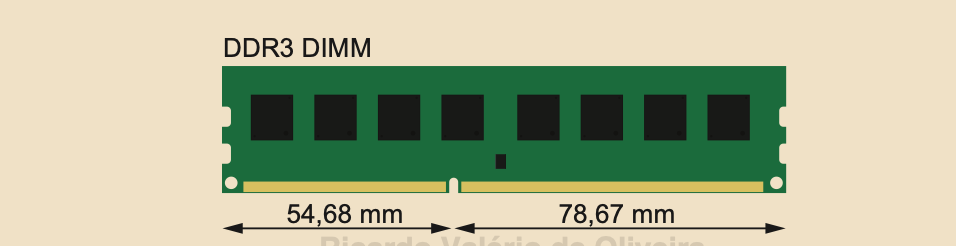
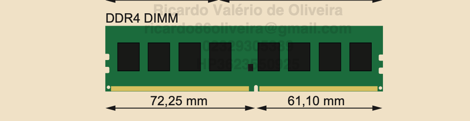

Aula 05 - A memória RAM
Impressindível para uso em todos os computador, a memória RAM (Random Acess Memory) ou Memória de Acesso Aleatório é uma forma de memória volátil usada pelo processador para armazenar dados temporários e instruções enquanto o computador está em funcionamento. É chamada de volátil porque perde seus dados quando o computador é desligado. A RAM também é chamada de memória principal ou primária.
É vendido em pequenas placas chamadas "módulos"ou "pentes". Muitas vezes para o obter maior desempenho possível será preciso comprar um número par de módulos de memória, para que se possa habilitar o módulo de operação de dois canais, o que em teoria dobra o desempenho no acesso à memória. Assim, se você quiser ter um computador com 8 GB de memória, teoricamente obterá maior desempenho se comprar dois módulos de memória de 4 GB do que um único módulo de 8 GB.

A capacidade de uma memória RAM é medida em gigabytes (GB) ou em terabytes (TB). A quantidade de RAM afeta a capacidade do sistema de executar múltiplos aplicativos simultaneamente. O sistema é afetado pela velocidade da RAM, quanto mais memória tiver, mais tarefas poderão ser executadas, especialmente em tarefas que exisgem muitos recursos, como edição de vídeo e jogos.
Tipos de RAM
- DRAM (Dynamic RAM): O tipo mais comum de RAM em computadores e dispositivos móveis. Armazena cada bit de dados em um capacitor, que precisa ser periodicamente recarregado para manter os dados.
- SRAM (Static RAM): Mais cara do que a dram, não precisa ser recarregada constantemente. Geralmente usada em cache de processadores.
- DDRDouble Data Rate:Uma evoluçao da DRAM que transfere dados na borda de subida e descida do ciclo de clock. Variantes incluem DDR3, DDR4 e DDR5, com cada geração oferecendo melhorias em velocidade e eficiência.
Tecnologia
Há atualmente três tecnologias de memória disponíveis, incompatíveis entre si, DDR3 (utilizada por processadores mais antigos), DDR4 e DDR5. Você deverá comprar módulos de memória de tecnologia compatível com a sua placa-mãe e processador. Você não pode instalar módulos DDR5 em uma placa-mãe que só aceita módulos DDR4 e vice-versa.
Os módulos de memória utilizados por cada tecnologia são fisicamente incompatíveis, ou seja, não há como encaixar um módulo de memória DD5 em uma placa-mãe com soquete DDR4.
Portanto, a escolha pela tecnologia se dá pela compatibilidade e não uma escolha de qual é a melhor ou mais moderna. Note que a compatibilidade descrita só se refere aos módulos de memória a serem intalados na placa-mãe, e não em relação à tecnologia de memória utilizada na placa de vídeo. Muitos usuários têm a impressão equivocada que uma placa de vídeo com memória GDDR5 não funcionará em placas-mãe que não suportem memórias DDR5. Isto não faz qualquer sentido. Veja o vídeo: https://www.youtube.com/watch?v=3z7Yz0ExgSI&t=6s
Formato Físico
Computadores de mesa usam módulos de memória em um formato chamado DIMM. Este tipo de memória é encontrado em computadores Desktop, computadores portáteis por necessitarem de peças com menor tamanho, usam módulos de memória chamados SODIMM, que são menores.
O formato físico dos módulos de memória é retangular, mas o número de contados disponíveis e a localização de uma ranhura nos módulos de memória e de um pino delimitador nos soquetes variam de acordo com a tecnologia da memória, de modo que é impossível encaixar um módulo de memória DDR3 em um soquete voltado a memórias DDR4 ou vice-versa.



| Memória | Módulo | Número de Contatos |
|---|---|---|
| DDR | DIMM | 184 |
| DDR2 | DIMM | 240 |
| DDR3 | DIMM | 240 |
| DDR4 | DIMM | 288 |
| DDR5 | DIMM | 288 |
| DDR3 | SODIMM | 204 |
| DDR4 | SODIMM | 260 |
| DDR4 | SODIMM | 262 |
É importante entender que a velocidade rotulada de uma memória não é a velocidade com que ela trabalhará: trata-se da velocidade máxima que o fabricante testou, certificou e garante que a memória funcionará. A velocidade com que a memória funcionará na prática dependerá do processador e da placa-mãe.
Atualmente, o circuito controlador de memória está embutido entro do processador, e cada processador tem um limite oficial da velocidade máxima de memória suportada.
Você pode consultar diretamente no site do fabricante do processador, na lista de especificações técnicas do processador que você escolheu para o seu computador, para saber qual é a velocidade máxima suportada. Você deverá também consultar a compatibilidade da placa-mãe com os módulos de memória pretendidos.
Links para consulta: